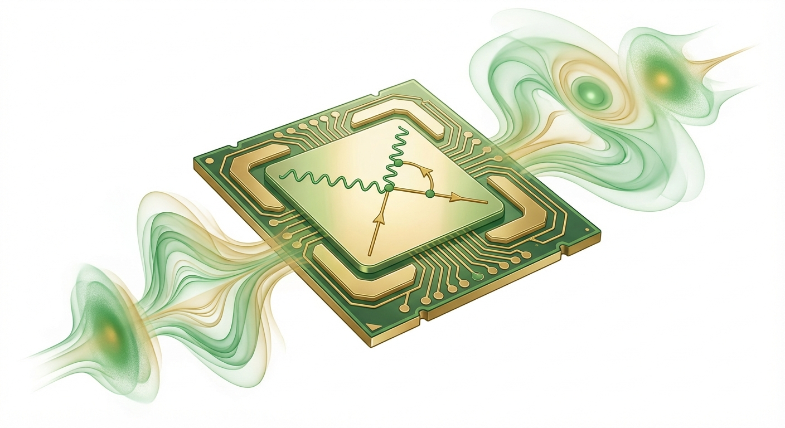

QED Simulation on GPU

QED Simulation on GPU
High-performance Monte-Carlo simulation achieving 1500x to 5000x speedup on GPU.
- Received recognition from Nobel Laureate Frank Wilczek at APS conference
- Demonstrated expertise in CUDA programming and GPU micro-architecture optimization